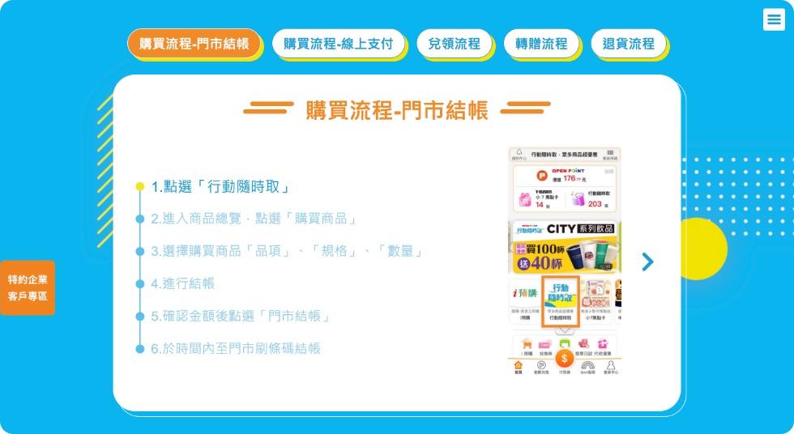

色彩規範
以行動隨時取海報視覺延伸配色。

近年線上支付＋門市取貨的行銷方式盛行，7-ELEVEN也結合OPEN POINT APP線上支付的功能，不分門市皆可取貨，隨時隨地隨心都可以買到7-ELEVEN最新優惠商品，成為不論早餐、午餐、晚餐、下午茶，隨心隨行的最佳夥伴。
以行動隨時取海報視覺延伸配色。
符合主視覺，設計出活潑、具有立體感的按鈕。
左為一般按鈕，右為hover及按下後Tab按鈕。
用Tab切換的方式。收納繁瑣的步驟流程，並列點加上文字說明，讓步驟更清楚明瞭。
收納詳細說明及QA問題，減少網頁頁面長度，瀏覽上不會有文字太多的壓迫感，尋找相關資訊也比較方便。